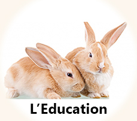
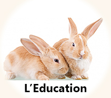

L'Habitat
Introduction
A l’opposé du mode de vie séculaire des lapins d’élevage en clapiers extérieurs, l’environnement du lapin de compagnie nécessite d’être adapté à ses besoins fondamentaux et son bien-être. C’est précisément ces conditions qui lui permettent de communiquer avec les membres de la famille et autres animaux, de développer ses sens et sa personnalité. Nous vous invitons donc à donner à votre lapin une vraie place à vos côtés au sein de votre foyer !
En cage ou en liberté
Nous ne le répéterons jamais assez : rien ne pourra rendre un lapin aussi heureux, épanoui, intéressant et en bonne santé que la vie en liberté au contact des humains.
Quelque soit son mode de vie, le lapin a besoin d’un minimum de matériel, d’espace et d’un environnement sécurisé :
- un point d'eau : préférez une gamelle au biberon.
- une gamelle pour sa nourriture : une simple assiette peut tout à faire convenir.
- un râtelier à foin ou un contenant suffisamment grand et pratique pour que le lapin puisse y manger son foin facilement tout au long de la journée.
- un bac à litière, facile d’accès avec une litière adaptée et confortable.
- une cabane qui lui servira de refuge, de lieu de sieste.
- des divertissements (tunnels, étage, jouets).
- quelques tapis, de préférence en coton et fins, placés aux endroits où le lapin passera le plus de temps pour éviter les frottements « trop agressifs » des pattes sur les différents sols.
L’environnement auquel votre lapin a accès doit être protégé afin d’éviter tout risque d’électrocution, d’ingestion de produit ou de plante toxiques, de chute d’un balcon, etc.
Si votre lapin ne vit pas encore en liberté, il est primordial que son espace lui permette de se mettre debout, de se toiletter, de s’étendre de tout son long, de jouer et de faire quelques bonds. Il doit également bénéficier d’un maximum d’heures de sortie chaque jour (au moins 4h) pour faire de l’exercice et ne pas accumuler une frustration due à l’enfermement. Celle-ci entraîne des comportements destructeurs lors des sorties et un stress qui, dans les cas les plus sévères, peut conduire le lapin à s’automutiler.
UNE CAGE NE PEUT OFFRIR CET ESPACE NECESSAIRE.
La preuve scientifique des incidences considérables et désastreuses de la vie en cage sur les lapins :
Dans le journal de l’association en février 2008, le Dr Shirley Seaman indique clairement que le confinement en clapier ou petite cage ne convient absolument pas aux lapins. Des études ont montré que des lapins en cage sont plus exposés aux maladies et aux accidents du dos.
Pour information, les recommandations de la Rabbit Welfare Association sont une cage de 180x60 cm + un parc. D'autre part, la loi fédérale Suisse précise que l'habitat du lapin doit faire entre 3.4 et 9.3 m2 et contenir au maximum entre 3 et 5 lapins.
Obésité, faiblesse du squelette, des muscles, du système cardio-pulmonaire, pododermatite, apathie, agressivité, dépression, automutilation sont autant de conséquences à la sédentarité extrême et forcée, imposée par la vie en cage.
L’image la plus désastreuse et la plus commune de la vie en cage est le lapin lui-même dont la personnalité a été étouffée par des années d’enfermement. Amorphe, inexpressif, hermétique à tout ce qui n’est pas de la nourriture ou terrorisé, inexistant, il n’a plus d’un lapin que l’enveloppe corporelle et quelques bribes d’un comportement survivaliste. Il devient un bibelot en vitrine, condamné à une existence vide.
Alors que les lapins sont des animaux d’une expressivité remarquable, sociables, joyeux, et d’une capacité hors du commun pour déchiffrer le langage verbal et corporel humain. Ils débordent de curiosité et d’intérêt pour la vie à nos côtés, pour nous…dès lors qu’on leur accorde ce dont ils ont besoin : de l’espace et de l’attention. Bien souvent, lorsque pour la première fois les propriétaires de lapins retirent toutes grilles pour laisser place à la liberté totale, leur lapin se révèle à eux et ils en gardent un souvenir très marquant.
N’hésitez pas à vous renseigner d’avantage dans l’article La cage, un habitat à bannir ! Les exceptions et comment la recycler. Vous en apprendrez d’avantage sur les dégâts provoqués par la vie en cage, clapiers d’intérieur et autres condos. Inenvisageable pour une cohabitation, vous comprendrez que la vie en cage représente un frein considérable à tout apprentissage (propreté, respect du territoire et des objets des humains).
Vous trouverez des conseils concernant les deux cas particuliers où la cage s’avère utile : l’accueil d’un lapereau et la nécessité d’un confinement thérapeutique. Et plein d’astuces pour utiliser une cage autrement !
Vous l’avez compris, si vous vous apprêtez à accueillir un lapin et que vous n’avez encore acheté aucun équipement, une cage ne vous sera probablement d’aucune utilité durant toute sa vie. D’autant plus qu’elle n’est pas non plus adaptée au transport des lapins en voiture, train, etc. Si vous n’accueillez pas un lapereau et si votre lapin ne nécessite pas d’être confiné pour des raisons médicales, une cage comme habitat, c’est à proscrire !
Mieux vaut investir dans un enclos d’éducation (peu onéreux) qui sera parfait à l’arrivée de votre lapin et qui vous sera utile dans bon nombre de situations : apprentissage de la propreté, des limites de son territoire et du respect du vôtre, préparation au passage de la semi liberté à la liberté totale, mise en place d’une cohabitation avec un congénère, sécurisation d’un coin bureau ou autre lors d’un emménagement, périmètre sécurisé sur un lieu de vacances, barrière pour des plantes non comestibles sur un balcon, séparation momentanée d’un congénère lors qu’un problème de santé sème un grain de sel dans leur cohabitation, etc.
L’accueil d’un lapin et le chemin vers la liberté
Malheureusement, de nombreux lapins sont abandonnés chaque année et attendent un foyer chaleureux. Leur adoption a de nombreux avantages : vous accueillez un lapin stérilisé, vacciné, dont l’état de santé a été sérieusement évalué.
Les bénévoles des refuges pourront vous donner de précieux conseils pour accueillir ce lapin avide de bonheur et lui permettre de construire une nouvelle vie heureuse. Vous permettrez ainsi au refuge une nouvelle prise en charge. Et chose non négligeable, vous vous épargnerez les affres de l’adolescence chez le lapin, période qui met souvent les nerfs à rude épreuve.
L’enclos ou la semi liberté
Bien souvent parmi les conseils inadaptés les plus abracadabrantesques, on entend : « Attendez un mois avant de le laisser sortir ». Pourquoi ? Parce que le stress occasionné serait dangereux pour lui.
Les lapins ont un comportement de proie. S’ils décident de sortir de leur enclos pour explorer tout le territoire, c’est qu’ils en ont bien plus envie que peur. Si ce n’est pas le cas, ils vont tout naturellement rester dans leur enclos avec leur cabane pour refuge et ne partiront à la découverte des lieux que lorsqu’ils seront prêts. Il faut donc tout simplement ouvrir dès le départ les portes de l’enclos à votre lapin et lui laisser le choix de sortir, et de s’approcher de vous s’il le désire.
En attendant que votre lapin soit éduqué à la propreté et au respect de votre territoire, l’idéal est de laisser son enclos ouvert dès que vous êtes là pour surveiller (matins, soirs et week- ends). Il pourra ainsi se défouler, participer à la vie de famille et construire une relation avec chacun de ses membres.
C’est ce que l’on appelle la vie en semi-liberté.
La liberté totale
Pourtant, un lapin bien éduqué est propre et ne fait pas de bêtises, pas plus qu’un chien ou qu’un chat. Le lapin n’est pas un castor qui passera sa journée à ronger murs et meubles, à détruire votre habitat. Le seul réel problème est que le lapin adore ronger les câbles électriques, ce qui représente un danger pour lui comme pour vous.
Il faut donc sécuriser votre habitat avant d’y laisser déambuler votre lapin, ce qui se résume à des astuces simples, rapides à mettre en place et peu coûteuses. A cette exception près, il ne ronge que pour exprimer sa frustration, de la colère ou de l’ennui, encore une fois tout comme pourraient le faire un chat ou un chien. Dès lors qu’il vit en liberté, avec du foin à disposition et des jeux sur lesquels il pourra se défouler, votre lapin ne sera nullement intéressé par le fait de saccager votre intérieur.
Inutile également de craindre le tapage nocturne de ce petit colocataire. Les lapins ne vivent pas essentiellement la nuit et ils ont pour habitude de caler leur rythme sur celui de leurs humains de compagnie. Les nuits sont donc très calmes, faites de longues siestes et de pauses repas.
Toutefois, les premières nuits de liberté peuvent être plus agitées. L’ivresse de cet espace à disposition et l’excitation seront à leur comble, et vous entendrez probablement votre lapin courir, sauter de joie, explorer avec ardeur suite à ce cadeau inestimable que vous venez de lui faire.
Pour lui, la liberté est la clé d’un monde merveilleux, rempli de possibilités et de plaisirs :
- choisir parmi tout cet espace le meilleur lieu pour faire la sieste et en changer au gré de ses envies.
- établir des parcours de courses folles en slalomant le plus vite possible entre les obstacles.
- se reposer ou se toiletter à l’abri sous la table basse, un tabouret, votre chaise ou sa cabane.
- explorer et surveiller tout le territoire en marquant chaque objet du menton pour y déposer son empreinte.
- monter sur sa cabane, le canapé, le lit et voir le monde d’un peu plus haut.
- partager avec vous la vie du foyer, vous attendre au pied du lit et jouer les réveille-matin, vous seconder en cuisine et se charger de ramasser les morceaux de fruits ou légumes tombés par inadvertance, fouiner ça et là lorsque vous faites du rangement, dormir à vos pieds lorsque vous travaillez à votre bureau, courir pour vous accueillir après votre journée de travail, jardiner à votre côté en taillant les plantes comestibles, à tout moment interrompre les choses pour réclamer une caresse… simplement être à vos côtés lors de vos activités.
Toutes ces opportunités, ces partages, ces joies vont exacerber l’expressivité de votre lapin et chaque jour, vous allez découvrir une nouvelle facette de lui et de la relation que vous entretenez. Il aura suffi d’un peu de patience et de persévérance le temps de son éducation. Puis vous pourrez retirer toutes les grilles, dernières barrières de ce foyer compartimenté. Et enfin, vous découvrirez la vie en harmonie avec votre lapin !